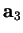
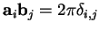
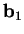
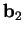
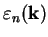
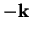

The corresponding menu for the  -points (KP-menu) looks
like this:
-points (KP-menu) looks
like this:
/-------------------------\\
|................. K-point menu ..................|
\\-------------------------/
0. BULK calculation
NEW reciprocal lattice vectors (up to 2*PI):
BJ0(1): 0.09190 0.00000 0.00000
BJ0(2): 0.00000 0.09190 0.00000
BJ0(3): 0.00000 0.00000 0.09190
1. DOS
2. BAND: eigenvalues along a k-direction
3. Self-consistent (ordinary) calculation
Q. Return to the main menu
Specify the character and press ENTER ---->
The option 0 allows one to choose between bulk and slab calculation. It is assumed here that the vacuum gap between slabs runs along the third lattice vector

. Although this vector may not be very large in actual calculation, in most cases related to the reciprocal space, it is convenient to assume that it is of an infinite length. This in turn implies that the Brillouin zone (BZ) in the case of a slab calculations is effectively 2D (planar, compressed in the third dimension). Thus, any
) removed, i.e. only
and
will be used.
Other options of the menu allows youto choose the  -points
depending on the type of the DFT calculation to be performed:
-points
depending on the type of the DFT calculation to be performed:

, for each electronic band
are assumed to be equivalent)